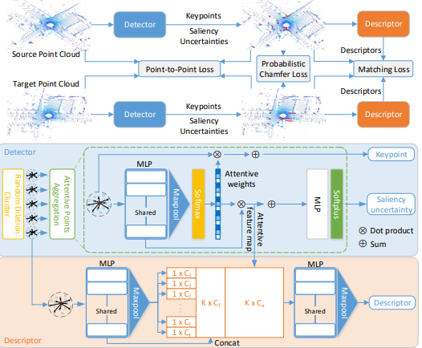
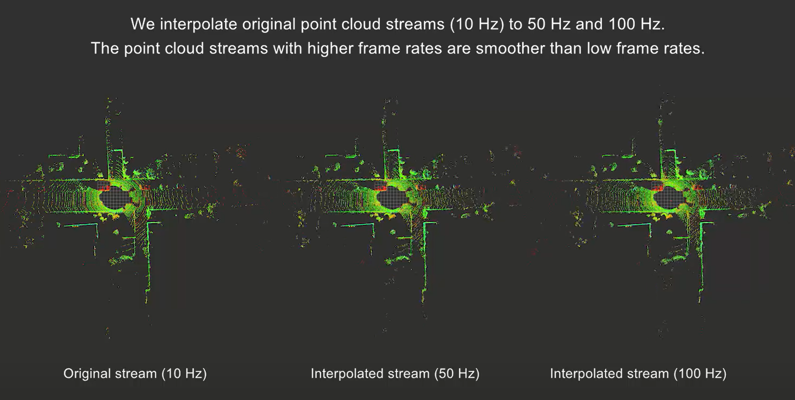
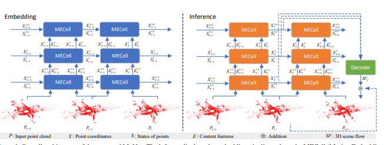

RSKDD-Net: Random Sample-based Keypoint Detector and Descriptor
Fan Lu, Guang Chen*, Yinlong Liu, Zhongnan Qu, Alois Knoll
Advances in Neural Information Processing Systems (NeurIPS), 2020
[Paper]
[Code]
This paper proposes Random Sample-based Keypoint Detector and Descriptor Network (RSKDD-Net)
for large scale point cloud registration. The key idea is using random sampling to
efficiently select candidate points and using a learning-based method to
jointly generate keypoints and descriptors.
About Me
I am currently a first-year Ph.D. student in Intelligent Sensing, Perception and Computing (ISPC) Group of Tongji University and supervised by Prof. Guang Chen. Before that, I received my bachelor's degree of Automotive Engineering in Tongji University in 2020. My research interests mainly focus on 3D Computer Vision, Deep Learning, SLAM, Autonomous Driving.
News
- [2020/12] One paper got accepted by AAAI 2021.
- [2020/09] One paper got accepted by NeurIPS 2020.
Experiences
- Tongji University (2015-2020) Bachelor's Degree in Automotive Engineering
Publications


PointINet: Point Cloud Frame Interpolation Network
Fan Lu, Guang Chen*, Sanqing Qu, Zhijun Li, Yinlong Liu, Alois Knoll
Thirty-Fifth AAAI Conference on Artificial Intelligence, 2021
[Paper] [Code]
We propose a novel framework, namely Point Cloud Frame Interpolation Network (PointINet). Based on the proposed method, the low frame rate point cloud streams can be upsampled to higher frame rates.
Fan Lu, Guang Chen*, Sanqing Qu, Zhijun Li, Yinlong Liu, Alois Knoll
Thirty-Fifth AAAI Conference on Artificial Intelligence, 2021
[Paper] [Code]
We propose a novel framework, namely Point Cloud Frame Interpolation Network (PointINet). Based on the proposed method, the low frame rate point cloud streams can be upsampled to higher frame rates.
Pre-Prints

MoNet: Motion-based Point Cloud Prediction Network
Fan Lu, Guang Chen*, Yinlong Liu, Zhijun Li, Sanqing Qu, Tianpei Zou
[Paper]
Fan Lu, Guang Chen*, Yinlong Liu, Zhijun Li, Sanqing Qu, Tianpei Zou
[Paper]
Honors and Awards
- Shanghai Outstanding Graduate, 2020
- Second Prize of National Post-Graduate Mathematical Contest in Modeling, 2020
Contact